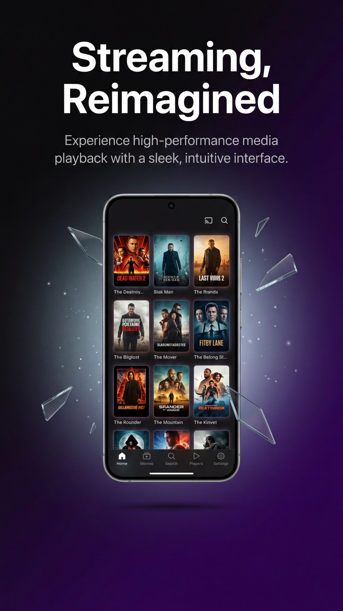

Le marché de l'IPTV sur iOS a radicalement changé. Alors que les utilisateurs cherchent massivement une application IPTV iPhone gratuite, la plupart des solutions disponibles sur l'App Store sont polluées par des publicités agressives ou des abonnements cachés. Après avoir testé plus de 50 lecteurs, voici notre verdict pour 2026.
1. StreamVision IPTV : Le champion incontesté
Développé par le collectif DIH LABS, StreamVision s'est imposé comme la référence absolue. Pourquoi ? Parce que c'est l'un des rares lecteurs à proposer une expérience 100% gratuite et sans aucune publicité.

- Interface : Design "Cinema" inspiré des meilleures plateformes de SVOD.
- Performance : Moteur de rendu 4K natif, sans latence.
- Fonctions : Support complet AirPlay, Picture-in-Picture et gestion multi-playlists.
- Prix : 0€ (Vraiment gratuit, pas de premium).
2. IPTV Smarters Pro
C'est le nom le plus connu. Bien que robuste, sa version gratuite sur iPhone est devenue difficile à utiliser en raison de bannières publicitaires qui masquent parfois les menus. De plus, l'interface n'a pas évolué depuis des années, ce qui la rend moins fluide sur les derniers iPhone 15 et 16.
3. iPlayTV (Apple TV & iPhone)
Souvent cité comme le meilleur design, iPlayTV a un défaut majeur : il est payant. Pour les utilisateurs à la recherche d'une solution gratuite, il ne coche pas la case principale, malgré une gestion des EPG (guides TV) très efficace.
Pourquoi la plupart des apps IPTV échouent ?
La majorité des développeurs utilisent l'IPTV pour générer des revenus publicitaires rapides. Ils intègrent des SDK de pub qui ralentissent votre téléphone et collectent vos données. StreamVision a pris le chemin inverse en proposant un outil pur, technique, au service de la communauté.
Verdict : Quel lecteur choisir ?
Si vous possédez un iPhone ou un iPad et que vous avez déjà vos listes M3U, ne cherchez plus. StreamVision IPTV offre la meilleure combinaison entre esthétique professionnelle et respect de l'utilisateur. C'est l'application IPTV iPhone par excellence pour ceux qui exigent la qualité sans le coût.